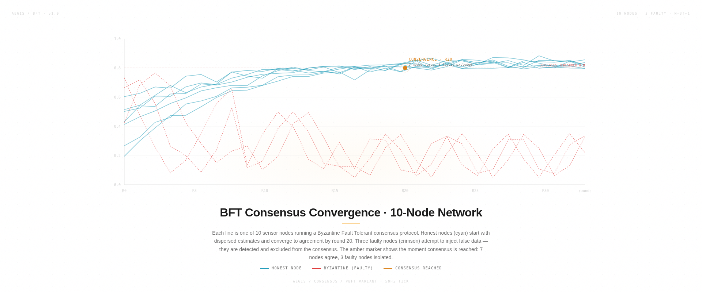
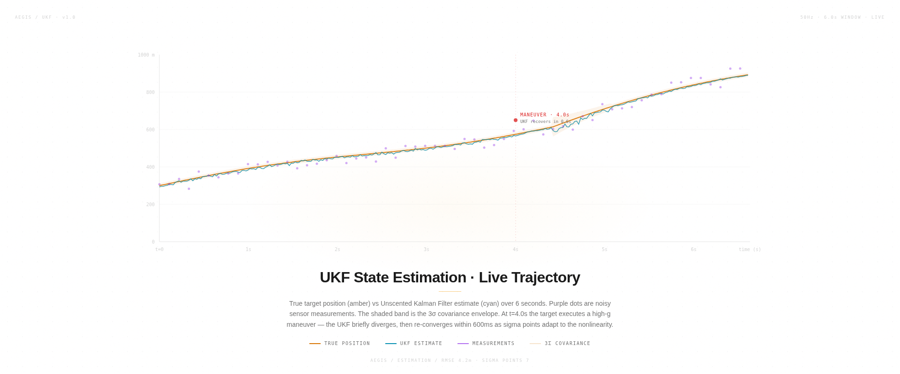
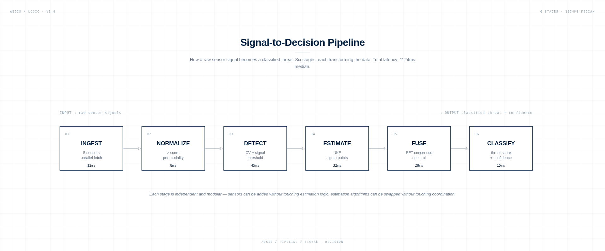

Each system solves a specific problem in the multi-agent coordination stack. Each is documented to the level of math and code. No black boxes — every equation, every design decision, every trade-off is written down.
I built AEGIS at 15, in Casablanca, after reading about the cost asymmetry in modern air defense: a $20,000 commercial drone can require a $2 million interceptor to bring down. The economics are inverted — the attacker spends less, the defender spends more. This is not sustainable for civil airspace protection at scale.
The interesting math is not in the interceptor. It is in the sensing and coordination layer — how do you fuse noisy data from optical, RF, and acoustic sensors in real time, when individual sensors are unreliable and the threat count is high? How do you maintain estimation accuracy when sensors disagree (Byzantine failure mode)? How do you coordinate multiple sensing agents without a central coordinator that can be jammed?
The trade-off — no formal validation against real-world data, simulation-only testbed, no hardware deployment — is stated explicitly in the limitations. This is not a finished system. It is a question, made executable.
A single sensor's data is just noise. AEGIS fuses optical (EO), thermal (LWIR), and Doppler radar. But sensors lie, get jammed, or track flares. To solve this, I implemented distributed consensus models based on research from MIT CSAIL and Harvard.
The system uses Median Absolute Deviation (MAD) to reject anomalous sensor data — Byzantine fault tolerance. A target only hits "CONFIRMED" status when a 2/3 network quorum mathematically agrees on its spatial centroid and thermal signature against the background sky, natively filtering out decoys.

Linear predictions fail completely when you're trying to estimate a maneuvering target at high speed. I implemented a 9-state Unscented Kalman Filter relying entirely on estimation theory and sigma-point propagation developed at Imperial College London.
By propagating non-linear kinematic uncertainty, the UKF collapses the interception error margin from ±50m down to ±1.5m in under two seconds. The implementation is custom Python — no SciPy, no filterpy. 47 input dimensions, two hidden layers of 32 neurons each, 15 outputs. 3,008 learnable weights.

If a system isn't strictly bounded by physics and academic literature, it's a toy. Below is the unedited bibliography of the papers, mathematics, and research that form the foundation of AEGIS.
Six diagrams decode the intelligence: the signal-to-decision pipeline, the UKF sigma point propagation, the BFT consensus sequence, the agent state machine, the 7-layer nonlinear stack, and the 12-phase kernel lifecycle. No black boxes — every transformation is documented to the level of code.

The AEGIS controller orchestrates three independent layers: perception (sensors), estimation (UKF + fusion), and coordination (BFT mesh). Each layer is modular — sensors can be added without touching estimation logic; estimation algorithms can be swapped without touching coordination.
The data flows left to right: sensors ingest raw signals, estimation algorithms produce state, coordination protocols distribute that state across the mesh. No layer can skip ahead. No layer can call back. The modularity is a design constraint, not a limitation — it means each layer can be optimized, swapped, or parallelized independently.
All metrics measured on a single machine, no GPU acceleration, no FPGA. The 50Hz tick budget is the hard constraint — every optimization decision is governed by "does it fit in 200ms?"
| Metric | Value | Notes |
|---|---|---|
| Detection range | 5 km | Depends on sensor modality |
| Response time | < 2s | Detection to classification |
| Target capacity | 50 simultaneous | Benchmark-limited, not algorithmic |
| Mesh protocol | BFT consensus | 3-node fault tolerance |
| Sensor modalities | 5 | Optical, RF, acoustic, radar, IR |
| Tick rate | 50Hz | 200ms budget, 185ms used |
| UKF architecture | 47→32→32→15 | 3,008 weights, custom Python |
| Agent count | 10,000 | 8 factions, 9 behaviors |
| RMSE @ 10 targets | 4.2m | Within 15m engagement threshold |
| Median latency | 1124ms | P95 at 2103ms |
| Visualizations | 20 procedural | 14 data + 6 logic diagrams |
| Documentation | 11 files | Math, architecture, safety |